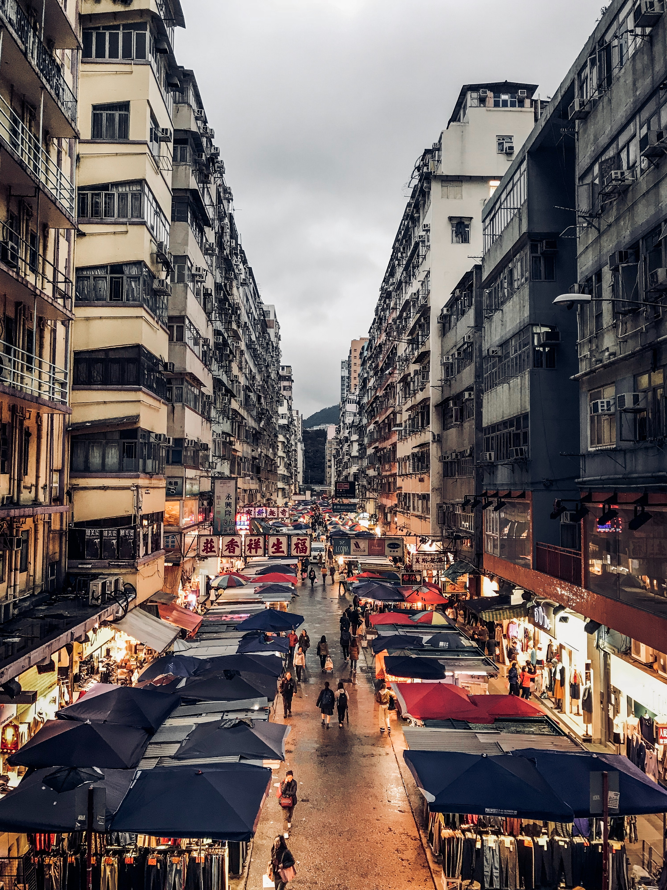
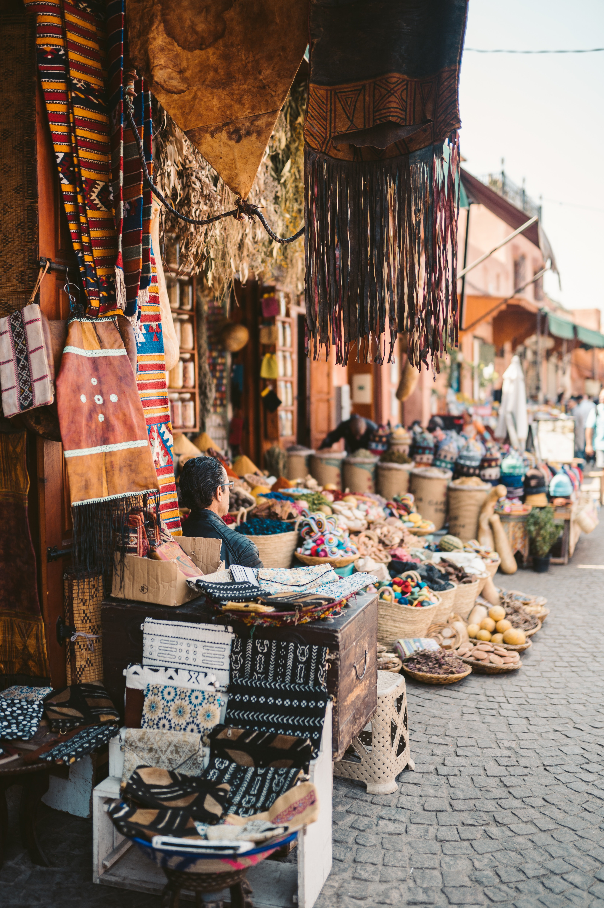
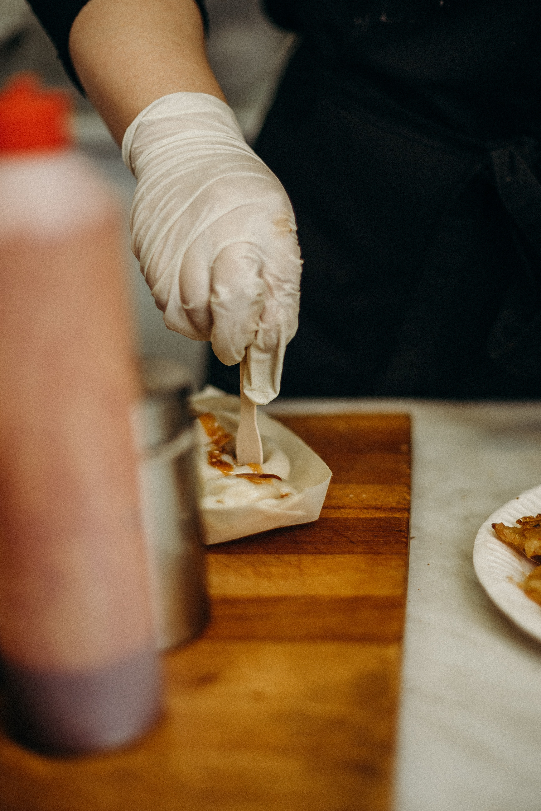

Canal Street Market is a carefully curated retail market, food hall &
community space open year-round at 265 Canal Street. Support Small Business
this weekend!

Merging retail, food, art, and culture, Canal Street Market highlights
top retail and design concepts, restaurants, and up-and-coming players
in the downtown New York City community.

Retail Market Hours:
Fri– Sun: 11:00AM - 7:00PM

Food Hall Hours:
Mon – Sun: 11:00AM - 8:00PM
12/02
Small Business Retail Pop Up Weekend!
12/07
New Balance x Paperboy Paris by Greenhouse @ Canal Street Market
12/11
Hack City 12/11